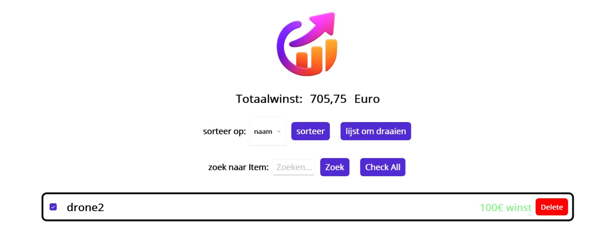
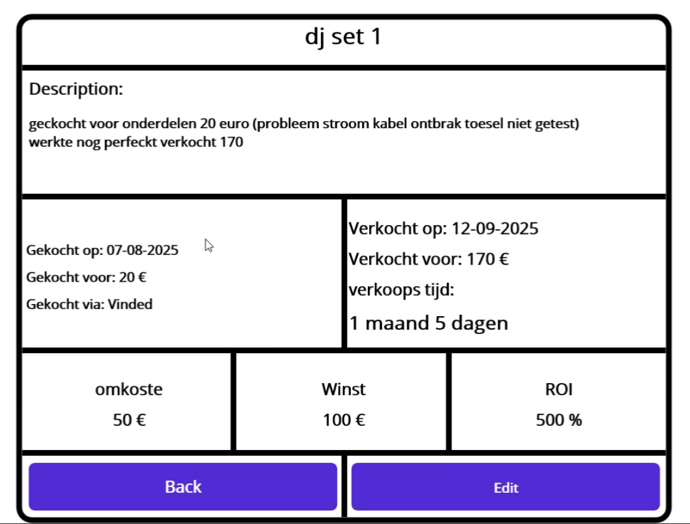
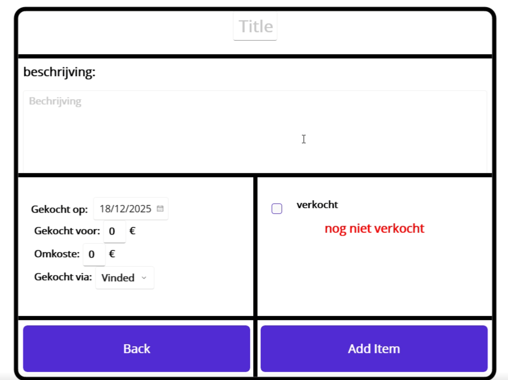

Tweede kans



Waarom deze app?
Het is mijn hobby om kapotte elektronica te herstellen en door te verkopen als refurbished. Deze app houdt bij hoeveel ik daaraan verdien.
Het idee
Tweede kans is een app waarmee je bijhoudt welke tweedehandsspullen je koopt en doorverkoopt, en hoeveel je daaraan verdient. Per item noteer je de aankoopprijs, de verkoopprijs, eventuele extra kosten, de data en het platform (Vinted, 2dehands, Marktplaats, eBay of iets anders).
Opbouw
Het project bestaat uit drie delen:
- een SQL Server-database met één tabel voor de items
- een ASP.NET Core Web API (.NET 8) die de database leest en aanpast
- een .NET MAUI-app die als gebruikersinterface dient op Windows en Android
De database en de API draaien samen in Docker. Zo start je ze met één commando en blijven de gegevens bewaard als de containers stoppen.
De API
Elk item heeft een titel, beschrijving, platform, aankoopprijs, verkoopprijs, omkosten, aankoopdatum en een optionele verkoopdatum. Is er geen verkoopdatum, dan is het item nog niet verkocht. De API kan items ophalen, één item ophalen, een item toevoegen en een item verwijderen. In de ontwikkelomgeving test je ze via Swagger.
De app
De app is opgebouwd volgens het MVVM-patroon met de CommunityToolkit.Mvvm-bibliotheek en navigeert met Shell-routes. Een aparte service praat met de API. Per item berekent de app automatisch de winst of het verlies (verkoopprijs min aankoopprijs en omkosten) en toont een statustekst zoals "25€ winst", "-10€ verlies" of "nog niet verkocht".
De schermen
- Hoofdscherm: al je items in een lijst met een checkbox. De totale winst onderaan is de som van de aangevinkte items. Je kan alles tegelijk aan- of uitvinken, sorteren op naam, aankoopdatum, verkoopdatum of winst, de lijst omdraaien en zoeken op titel. Lukt het ophalen van de items niet, dan zie je een foutpagina die zegt dat je eerst de database en API met Docker moet opstarten.
- Detailscherm: alle gegevens van het item, met de winst of het verlies, het rendement (ROI, winst gedeeld door aankoopprijs) en de verkooptijd in jaren, maanden en dagen.
- Bewerkscherm: hier voeg je items toe of pas je ze aan. Voor het opslaan controleert de app of titel en beschrijving ingevuld zijn en of de verkoopdatum niet voor de aankoopdatum ligt. Gaat er iets mis met de API, dan krijg je een foutmelding.